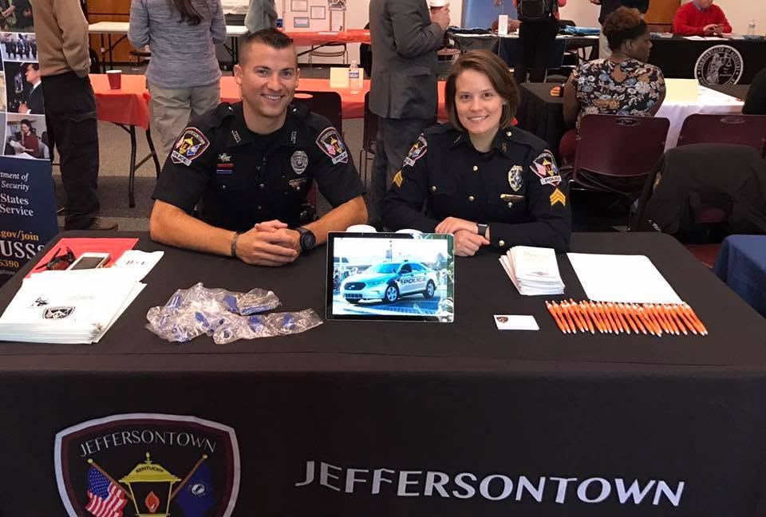
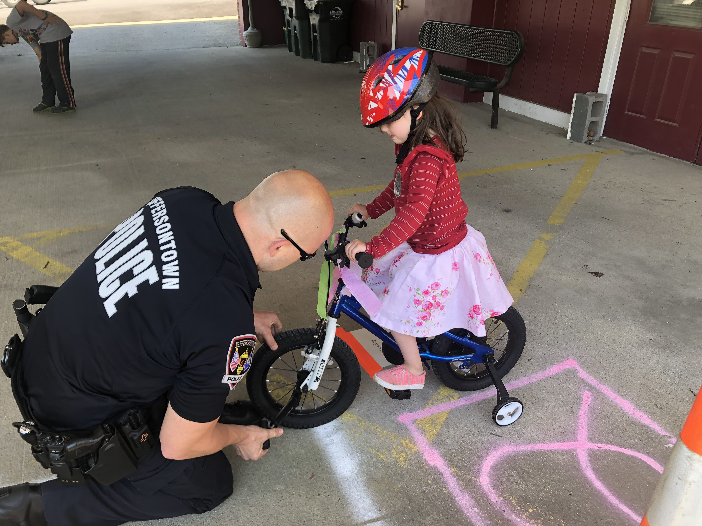
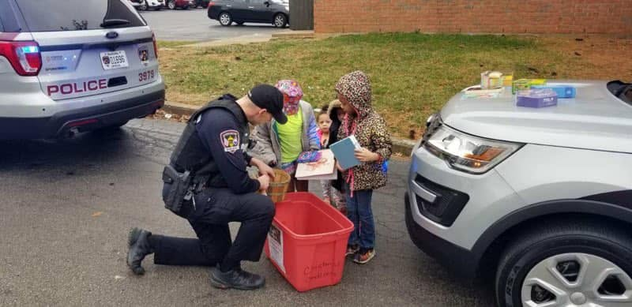

◫
Community Events
Support for National Night Out, neighborhood gatherings, open houses and other events that create relaxed opportunities for conversation, connection and relationship-building.


Foundation support helps create positive opportunities for residents and officers to connect outside of emergencies. Through outreach, youth programs, neighborhood events, service and informal conversation, we help build trust before a crisis happens.
Support for National Night Out, neighborhood gatherings, open houses and other events that create relaxed opportunities for conversation, connection and relationship-building.

Coffee with a Cop, Donuts with a Cop, school visits and other informal opportunities where residents can ask questions, share concerns and get to know officers outside an emergency.

Bicycle safety, youth activities, school partnerships and family-focused safety education that build confidence, strengthen relationships and help young people thrive.

Holiday giving, hospital visits, charitable projects and other moments when JPD can show up for people in meaningful ways beyond traditional police service.

Your support can help create more opportunities for officers and residents to meet, serve, learn and build trust together.
Support Community Engagement